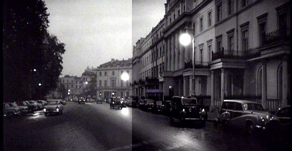
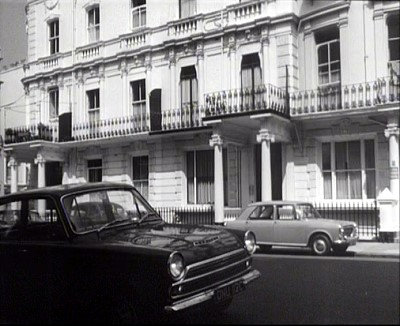
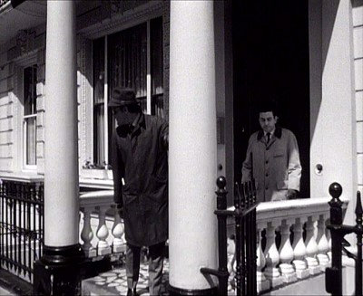
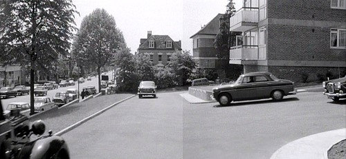
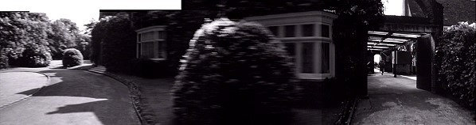
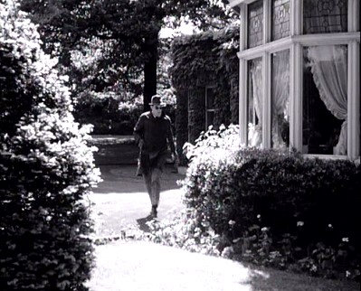
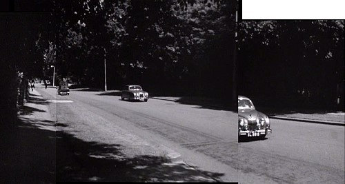
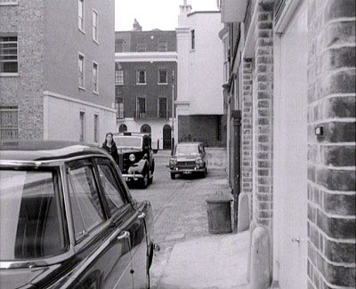
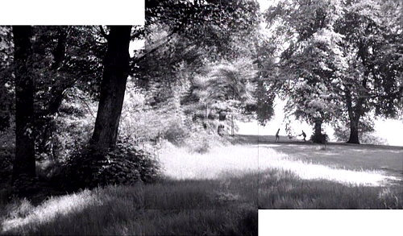
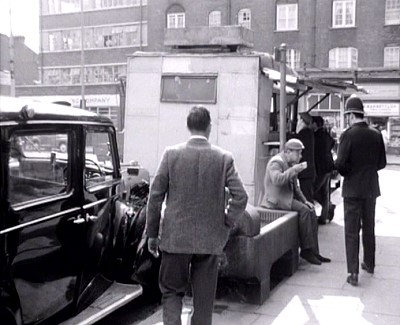

|
|
HELP FIND THE FOLLOWING LOCATIONS
PAGE 49
GIDEON’S WAY: The Perfect Crime (Leslie Norman: May 1965)

Belgrave Square– Spender Todd (Patrick Allen) and
Casey (Patrick Bedford) arrive at the home of Lord and Lady Melton, no. 27,
‘off
(Identified by Geoff Dodd, July 2005)
  
Unknown 3 –Todd (Patrick Allen) and Patrick Bedford (Patrick Bedford) arrive back at Casey’s home after the job.


Embassy Lodge, N3–Todd
arrives back at his flat and leaves as Spender. “

6 Groom Place SW1
–Michael Spender & Miss Ann Beaumont arrives late at party Sir
Charles lady Eden.Michael
Spender and Miss Ann Beaumont awake
next morning, but Michael has crime, not breakfast, on his mind.
(Identified by Geoff Dodd, April 2007)


Unknown 5 –Todd (Patrick Allen) meets Casey (Patrick Bedford) in a park to hand over his share of the takings and plan the next robbery.


Unknown 6 –Spender Todd (Patrick Allen) and Jimmy Casey (Patrick Bedford) arrive at the home of the Danes and proceed to break in. A police man is cycling by and takes the number of Casey’s stolen car. The policemen arrive and are able to arrest Casey whilst Todd escapes.

 
Wormwood Scrubs, W12
– Gideon goes to visit Jimmy Casey in Brixton Prison.
(Identified by Wiebke
Koeppen, April
2006)

Unknown 8 –Todd (Patrick Allen) arrives back at his mews apartment. He has been followed by Sandra Casey (Jean Marsh) in a taxi. She pays off the taxi driver (Richard Davies) and proceeds to confront Todd. She soon discovers that Todd is not the man’s real name.


Unknown 9 –A young couple in Hampstead Heath come across the body of Sandra Casey (Jean Marsh) in the park.

Hendon
(Identified by Geoff Dodd, October 2007)

Unknown 11 –The police interview taxi drivers to find the one that drove Sandra Casey.

Unknown 12 –The police eventually find the taxi driver (Richard Davies)

Unknown 14 –Gideon arrives in a police car – just too late.

Think you know a spot? Need a bigger image? Email me.
< Previous | Index | Avengerland | Next >
Copyright © 2003 Anthony R. McKay